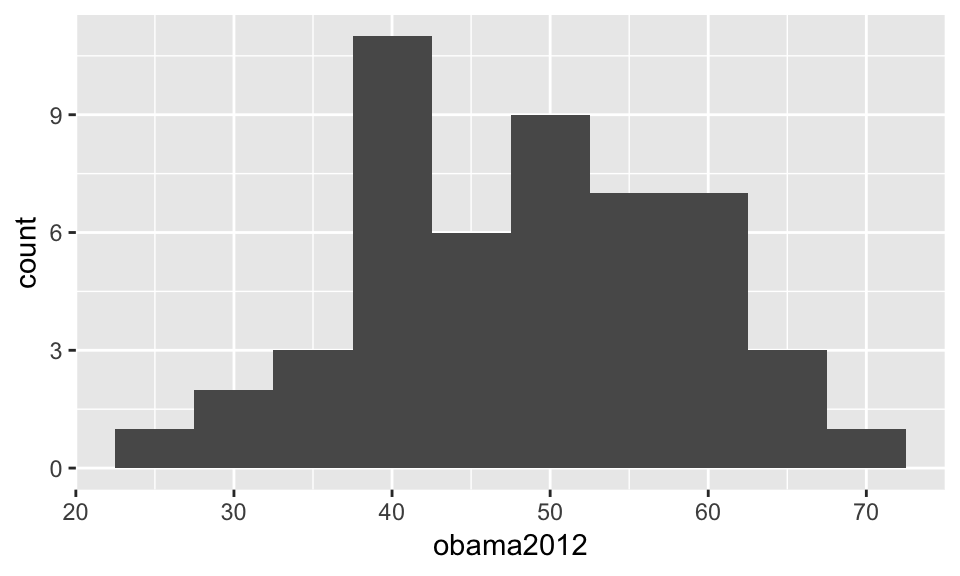
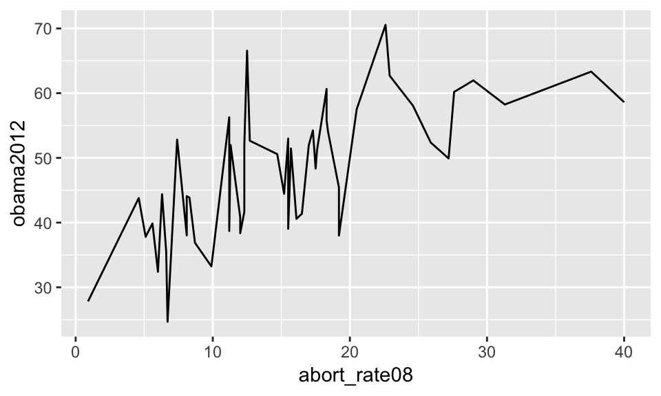
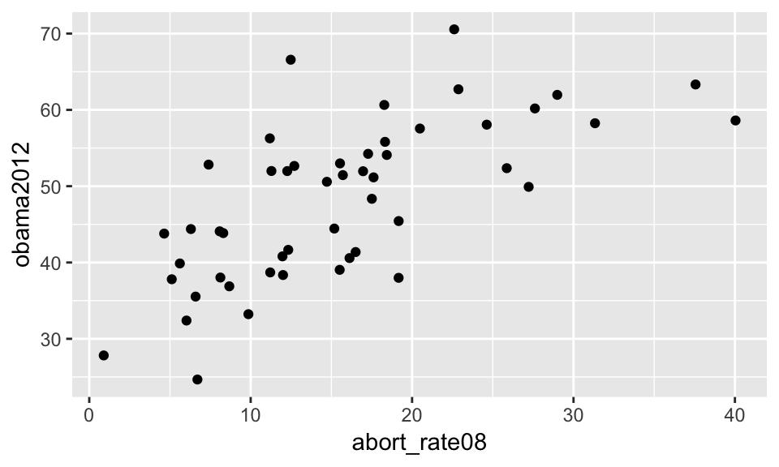
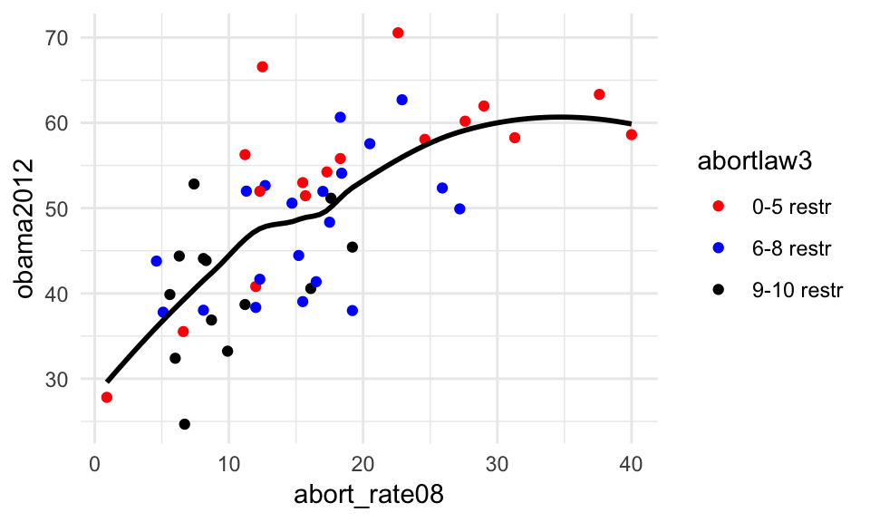

Chapter 6 Data visualisation
Visualising data is important (Healy & Moody, 2014). As with everything in R, there are a lot of different ways to visualise data. One simple way to visualise data is to use base functions in R (i.e. functions that come when you install the R language). Below you will see an example on this.
plot(x=uk2017$votes, y=uk2017$seats)
There is nothing inherently wrong with using a function like this, but the moment we want to tweak the figure, it gets complicated. Accordingly, we will not use the standard functions in R but the package ggplot2 (H. Wickham, 2009). This package makes it easy to create beautiful figures in R.
ggplot2 creates more beautiful figures with better defaults, it is very customizable, and it works within the tidyverse (together with dplyr). For those reasons it is becoming incredibly popular among practitioners and academics alike. That being said, there is an element of personal preference when it comes to data visualisations and ggplot2 is not perfect. While the defaults are good, they could be better. Furthermore, there are functions in the package you should never use (such as qplot(), short for quick plot).
6.1 The basics of ggplot2
You can load ggplot2 by loading the tidyverse (alternatively you can just load the ggplot2 package).
library("tidyverse")The two g’s (gg) in ggplot2 are short for grammar of graphics. The philosophy is that we are working with building blocks in the form of a sentence structure where we can add more components to our visualisation, e.g. change colours and add text. This makes it easy to first create a figure and then tweak it till we are satisfied.
These building blocks are:
- Data (the data frame we will be using)
- Aesthetics (the variables we will be working with)
- Geometric objects (the type of visualisation)
- Theme adjustments (size, text, colours etc.)
6.1.1 Data
The function we will be using is ggplot(). Here, we will be using the states data from the poliscidata package introduced in Chapter 4.
library("poliscidata")
states <- statesThe first thing we always have to specify in our function is the data frame. In other words, you will always have to use a data frame.
ggplot(states)Do note that if you run the code above - and have the states in your working memory, we will not get anything but an empty plot. The only thing we have done so far is telling R that we would like to create a coordinate system and data from uk2017 should play some role, but this is of course not enough.
6.1.2 Aesthetics
The next thing we have to specify is what variables in the data frame we will be using and what role they play. To do this we will use the function aes() within the ggplot() function after the data frame (remember the comma after the data frame).
ggplot(states, aes(x = abort_rate08, y = obama2012))In the example above we specify that we are working with two variables, x (Number of abortions per 1,000 women aged 15-44 in 2008) and y (Obama vote share in 2012). If you only will be working with one variable (e.g. a histogram), you should of course only specificy one variable, x. However, now we have only told R what variables we would like to work with, but it is still not enough to actually create a figure.
6.1.3 Geometric objects
Now we will need to add the geometric object, we would like to visualise. We need to go to a new line and tell R to follow along. To do this, we add a plus (+) at the end of the line. On the new line we add the type of geometric object (geom_), we want add. To replicate the plot above we use geom_point().
ggplot(states, aes(x = abort_rate08, y = obama2012)) +
geom_point()
This is a standard ggplot2 plot with all its defaults. If we instead a scatter plot wanted a line plot, we can change geom_point() to geom_line().
ggplot(states, aes(x = abort_rate08, y = obama2012)) +
geom_line()
The above figure is somewhat misleading so it is just to show the logic of the how geometric objects work. Interestingly, we can add multiple geometric objects to the same plot. Below, we add both geometric objects used above.
ggplot(states, aes(x = abort_rate08, y = obama2012)) +
geom_line() +
geom_point()
6.1.4 Theme adjustments
What you will see in a typical plot is that it is not done. The axes simply have the variable names, the colours are not great etc. Accordingly, we often need to add and change elements of our plot. Here we add the theme of the plot (described in detail below).
ggplot(states, aes(x = abort_rate08, y = obama2012)) +
geom_point() +
theme_minimal()
We can also easily change the labels by using xlab() and ylab().
ggplot(states, aes(x = abort_rate08, y = obama2012)) +
geom_point() +
theme_minimal() +
ylab("Obama vote share in 2012") +
xlab("Number of abortions per 1,000 women aged 15-44 in 2008")
This is the basic logic of ggplot2.
6.2 Plotting one variable: distributions
Table 6.1 shows the geometric objects we will be working with below. In addition to the name of the object, you will also find a link where you can find more illustrations and examples on how they work.
| Name | Function | Cookbook for R |
|---|---|---|
| Bar plot | geom_bar() |
Bar and line graphs |
| Histogram | geom_histogram() |
Plotting distributions |
| Density plot | geom_density() |
Plotting distributions |
6.2.1 Bar plot
The first plot we will do is a bar plot. To do this we use a variable on the number of restrictions on abortion (abortlaw10) and geom_bar().
ggplot(states, aes(x=abortlaw10)) +
geom_bar() 
6.2.2 Histograms
The next figure we will work with is the histogram. Here we will plot the distribution of Obama’s vote share in 2012 (the obama2012 variable) and use geom_histogram().
ggplot(states, aes(x=obama2012)) +
geom_histogram() `stat_bin()` using `bins = 30`. Pick better value with `binwidth`.
As you can see, we get a message about the use of a default binwidth. This is to emphasize the importance of specifying the binwidth yourself. We can change the bin width by adding binwidth to geom_histogram().
ggplot(states, aes(x=obama2012)) +
geom_histogram(binwidth = 5)
Play around with different binwidths to see how it affects the distribution in the figure.
6.2.3 Density plots
The histogram is not the only way to show the distribution of a variable. To make a density plot, you can use geom_density(). We use the obama2012 variable again.
ggplot(states, aes(x=obama2012)) +
geom_density() 
Do compare the density plot to the histograms above.
6.3 Plotting two variables: relationships
To show how different variables are related, Table 6.1 shows the geometric objects we will be working with below as well as link where you can find more information.
| Name | Function | Cookbook for R |
|---|---|---|
| Box plot | geom_boxplot() |
Plotting distributions |
| Scatter plot | geom_point() |
Scatterplots |
6.3.1 Box plot
For the box plot, we will be using geom_boxplot() to show how the vote share for Obama is related to abortion laws (here with the abortlaw3 variable, i.e. abortion restrictions with three tiers of number of restrictions).
ggplot(states, aes(x=abortlaw3, group=abortlaw3, y=obama2012)) +
geom_boxplot() 
Here we can see that Obama got a greater vote share in states with less restrictions on abortion.
6.3.2 Scatter plots
To illustrate the relation between number of abortions and Obama’s vote share, measured with the variables abort_rate08 and obama2012, we will create a scatter plot with geom_point().
ggplot(states, aes(x=abort_rate08, y=obama2012)) +
geom_point() If we are working with a lot of observations, there will be an overlap in the points. To show all of the observations, we can add some small, random noise to the observations, so we can see more of them. To do this, we can use geom_jitter() instead of geom_point().
ggplot(states, aes(x=abort_rate08, y=obama2012)) +
geom_jitter() 
We can also use geom_point(position = "jitter") instead of Instead of geom_jitter(). However, in this particular case, as we only have 50 observations, it is not a major concern.
6.3.3 Line plots
To create a regression line we can use the geom_smooth() function. Here we will again look at the relation between abort_rate08 and obama2012.
ggplot(states, aes(x=abort_rate08, y=obama2012)) +
geom_smooth()
Here we can see that as the abortion rate increases, so does the vote share for Obama. As we can also see, this is a smoothing function. To have a linear line instead we can specify that we will be using method="lm" as an option.
ggplot(states, aes(x=abort_rate08, y=obama2012)) +
geom_smooth(method="lm")
6.4 Manipulating plots
6.4.1 Themes
As you could see in the plots above, we have used a default theme in ggplot2. Table 6.3 shows a series of themes to be found in ggplot2and the package ggthemes. These are just a selection of some of the themes.
| Function | Package | Description |
|---|---|---|
| theme_bw() | ggplot2 |
Black elements on white background |
| theme_minimal() | ggplot2 |
Minimalistic |
| theme_classic() | ggplot2 |
Theme without grid lines |
| theme_base() | ggthemes |
Copy of the base theme in R |
| theme_economist() | ggthemes |
The Economist theme |
| theme_fivethirtyeight() | ggthemes |
FiveThirtyEight theme |
| theme_tufte() | ggthemes |
Tufte (1983) theme |
Figure 6.1 shows the look of the different themes. The order is: Standard, theme_bw(), theme_minimal(), theme_classic(), theme_base(), theme_economist(), theme_fivethirtyeight(), theme_tufte().
Figure 6.1: Eight themes
You can find a lot more resources online related to ggplot2. In addition to the links above, do consult ggthemr and ggplot2 extensions.
Below, we will be using theme_minimal() as the theme when we work with out plots.
ggplot(states, aes(x=abort_rate08, y=obama2012)) +
geom_point(position = "jitter") +
geom_smooth(se=FALSE) +
theme_minimal()
6.4.2 Colours
If we want to change the colours of the points in our plot, we can add the colour="" option to our geometric objects. In the example below we change the colour of our points from black to red and the colour of the line to black.
ggplot(states, aes(x=abort_rate08, y=obama2012)) +
geom_point(colour="red") +
geom_smooth(se=FALSE, colour="black") +
theme_minimal()
If we want to give points a value based on the value of a specific variable, we need to specificy this within aes(). When we add colour=abortlaw3 to our aes(), we will see different colours for states with different restrictions on abortion.
ggplot(states, aes(x=abort_rate08, y=obama2012)) +
geom_point(aes(colour=abortlaw3)) +
geom_smooth(se=FALSE, colour="black") +
theme_minimal()
If we want to change these colours, we can use scale_colour_manual().
ggplot(states, aes(x=abort_rate08, y=obama2012)) +
geom_point(aes(colour=abortlaw3)) +
geom_smooth(se=FALSE, colour="black") +
theme_minimal() +
scale_colour_manual(values = c("red", "blue", "black")) 
The colours are very bright. If we want to make them less so we can add alpha to geom_point() to add transparency to the points. Below we use an alpha of 0.7 (if we want more transparency we can use a lower alpha level).
ggplot(states, aes(x=abort_rate08, y=obama2012)) +
geom_point(aes(colour=abortlaw3), alpha=0.7) +
geom_smooth(se=FALSE, colour="black") +
theme_minimal() +
scale_colour_manual(values = c("red", "blue", "black")) 
6.4.3 Labels
Make sure that your figure have labels that helps the reader understand what is going on. To do this, you can add labs() to your figure. Here we will add a title, subtitle and caption.
ggplot(states, aes(x=abort_rate08, y=obama2012)) +
geom_point(aes(colour=abortlaw3), alpha=0.7) +
geom_smooth(se=FALSE, colour="black") +
theme_minimal() +
scale_colour_manual(values = c("red", "blue", "black")) +
labs(
title = "Abortion and the Obama vote",
subtitle = "The relation between number of abortions and vote share for Obama",
caption = "Data from the poliscidata R package",
colour = "Abortion restrictions"
) 
Last, we can see that the legend title is abortlaw3. We can change this by adding colour to labs() as well.
ggplot(states, aes(x=abort_rate08, y=obama2012)) +
geom_point(aes(colour=abortlaw3), alpha=0.7) +
geom_smooth(se=FALSE, colour="black") +
theme_minimal() +
scale_colour_manual(values = c("red", "blue", "black")) +
labs(
title = "Abortion and the Obama vote",
subtitle = "The relation between number of abortions and vote share for Obama",
caption = "Data from the poliscidata R package",
colour = "Abortion restrictions"
) 
6.4.4 Axes
Related to labels are the axes. Always label the axes so they have meaningful names. The variable name is not a meaningful name. We add x and y to the labs() addition in our plot.
ggplot(states, aes(x=abort_rate08, y=obama2012)) +
geom_point(aes(colour=abortlaw3), alpha=0.7) +
geom_smooth(se=FALSE, colour="black") +
theme_minimal() +
scale_colour_manual(values = c("red", "blue", "black")) +
labs(
title = "Abortion and the Obama vote",
subtitle = "The relation between number of abortions and vote share for Obama",
caption = "Data from the poliscidata R package",
colour = "Abortion restrictions",
y = "Obama vote share in 2012",
x = "Number of abortions per 1,000 women aged 15-44 in 2008"
) 
6.4.5 Confidence intervals
We can have confidence intervals in our figure by not having se (standard errors) set to FALSE.
ggplot(states, aes(x=abort_rate08, y=obama2012)) +
geom_point(aes(colour=abortlaw3), alpha=0.7) +
geom_smooth(colour="black") +
theme_minimal() +
scale_colour_manual(values = c("red", "blue", "black")) +
labs(
title = "Abortion and the Obama vote",
subtitle = "The relation between number of abortions and vote share for Obama",
caption = "Data from the poliscidata R package",
colour = "Abortion restrictions",
y = "Obama vote share in 2012",
x = "Number of abortions per 1,000 women aged 15-44 in 2008"
) 
6.4.6 Making multiple plots in one
If we would prefer to have the plots for different observations, we can specify that with facet_grid().
ggplot(states, aes(x=abort_rate08, y=obama2012)) +
geom_point(aes(colour=abortlaw3), alpha=0.7) +
geom_smooth(colour="black") +
theme_minimal() +
scale_colour_manual(values = c("red", "blue", "black")) +
labs(
title = "Abortion and the Obama vote",
subtitle = "The relation between number of abortions and vote share for Obama",
caption = "Data from the poliscidata R package",
colour = "Abortion restrictions",
y = "Obama vote share in 2012",
x = "Number of abortions per 1,000 women aged 15-44 in 2008"
) +
facet_grid(~ abortlaw3)
6.5 Saving plots
When you have a plot you would like to save, you can use ggsave(). Do keep in mind that it will only save the last plot you have created.
ggsave("fig1-abortion.png")The figure will be saved in your working directory. The file type .png can be replaced to whatever format you would prefer your figure to be in. If you have saved your figure in an object, you can save it by specifying this before the file name.
ggsave(fig1, "fig1-abortion.png")Often you will see that you are not totally satisfied with the size of your figure. To change this, you can use width and height.
ggsave(fig1, "fig1-abortion.png", width = 4, height = 4)